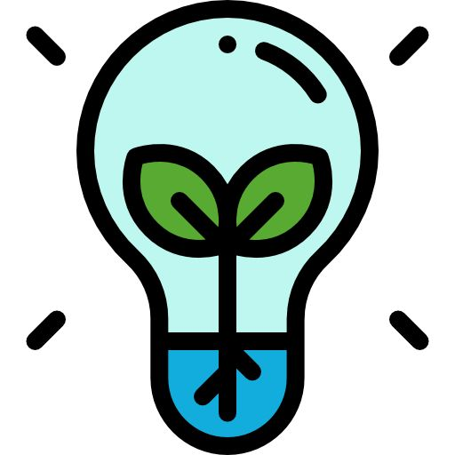

Pensando em fazer a diferença?
Cadastre-se e encontre a quem ajudar com FLowerFuture
Encontre instituições para se voluntáriar que preze pela sustentabilidade, bem estar e educação.

conscientização ambiental e a conservação dos recursos naturais através de campanhas de reflorestamento e preservação de ecossistemas.

campanhas ao combate a fome e a desnutrição através de iniciativas de segurança alimentar, como hortas comunitárias e distribuição de alimentos.
acesso igualitário à educação em comunidades carentes, fornecendo bolsas de estudo e programas de capacitação para crianças e jovens.
Depoimentos
Grande inspiração

"A Iniciativa Planeta Verde me inspirou a repensar meu estilo de vida e adotar práticas mais sustentáveis.Pequenas ações podem fazer uma grande diferença para o nosso planeta." - Ana Oliveira, apoiadora da causa ambiental